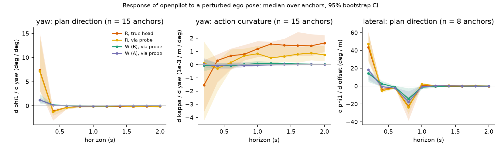
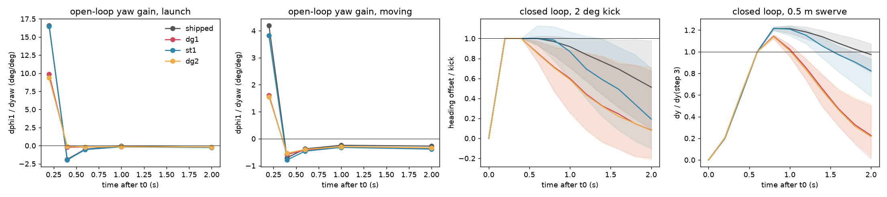
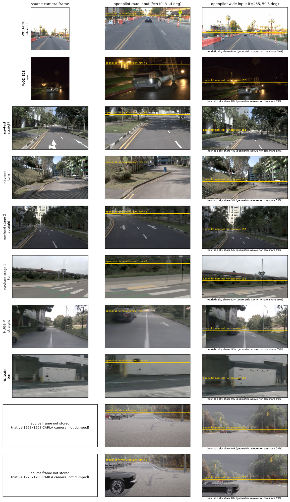
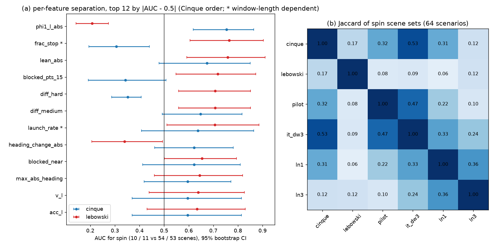
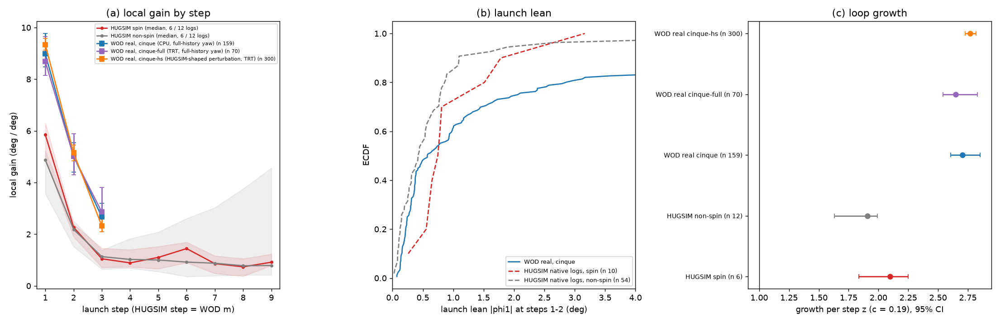
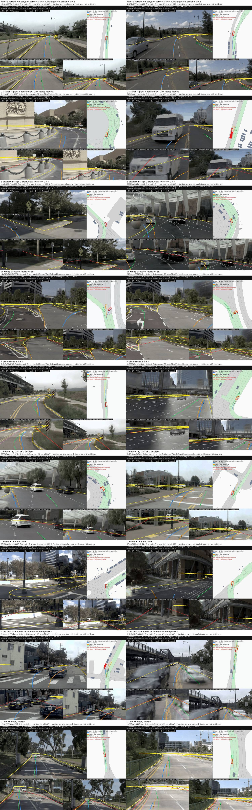
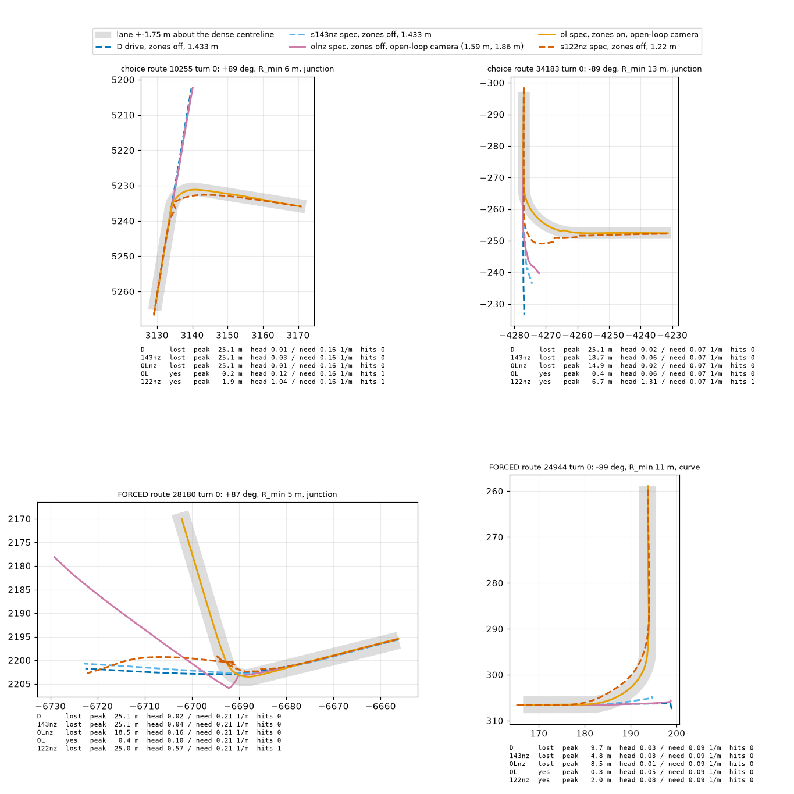

2026-10-22 主线重定（用户定标题，论文决定 PD1，paper/decisions.md）。本页取代 10-08 的「trick or trade」骨架：旧骨架的接口归因压成第七节附录，世界模型训练场的负结果并进第三节。 主线来源：knowing-vs-doing.md（知道与会做分开）、s-rows-and-paper.md（S 行审计与论文候选 1）、 10-22 查新 lit/2026-10-22-do-we-need-world-models.md。决策 177 的候选主线（冻结表征上从后果而不是日志模仿学）在这里具体化为身体图式学习。
时间：CVPR 2027：OpenReview 注册（标题、摘要、作者）2026-11-10，全文 11-16，补充材料 11-23，都按 AoE，不延期；合作者的 OpenReview 账号没有机构邮箱的审核要两周。10-31 AlpaSim 关榜前仍是先拿分，本页的实验在那之后启动；标题也用于汽车工程学会《Automotive Innovation》引用表（拟引 FocalAD，DOI 10.1007/s42154-025-00465-6；Zeng et al. 的 Reinforced Imitative Trajectory Planning，DOI 10.1007/s42154-025-00430-3）。
现阶段，端到端驾驶的瓶颈是「开不出来」，不是「看不懂」：学术界的驾驶策略连转弯、变道、到点停车、起步时机都做不好，还远没到需要读懂复杂交互指令或交警手势的阶段。 所以把通用领域的基础世界模型（Qwen 这类大语言模型、V-JEPA / WA-JEPA 这类视频模型）直接嫁接到驾驶上，现在是把力气用错了地方：嫁接来的东西大部分没被用上。 缺的是一个身体图式：策略对「我这副车身接下来会扫过哪里、会不会碰到别人、会不会出路」的把握，它只能从策略自己动作的、可归因的后果里学到。
| 论点 | 内容 | 状态 |
|---|---|---|
| C1 诊断 | 冻结的量产编码器已经「看得见、想得到」：自己 plan 的后果、前车起步、刹车需要都可读；失败集中在参照在自己身上的动作（转弯、变道、到点停车、起步时机）。 | 读数多，1 个模型 |
| C2 嫁接过剩 | 强骨干上世界模型只给零点几分；我们自己的世界模型训练场全是负结果；嫁接的基础模型里驾驶真正读到的只是一小部分（待测）。论点限定为「现阶段」「基础世界模型直接嫁接」，不是「不需要预测」。 | 文献 + 负结果；用量探针缺 |
| C3 方法 | 身体图式学习（Body Schema Learning）：在策略自己的闭环状态上，不给专家目标，只对当前 plan 的车身扫掠算解析的后果 hinge（现有 S 行），与模仿混训；Cinque 382M 不换、测试时不加模块。 | nuPlan / PAI 有正读数；跨榜缺 |
| 读数 | 说明什么 | 决策 |
|---|---|---|
| 冻结 Cinque token 上的接触头预测「自己 plan 的扫掠会不会碰到」AUC 0.905 [0.868, 0.934]，出界 0.978（navtrain 留出 log）；在 AlpaSim 决策上 0.885，无视觉同款头 0.770 | 后果在表征里，策略没用它 | 223 |
| 前车一动，0–0.5 s 箱冻结 token AUC 0.984（渲染），策略在越过 0.3 m 后的第一次决策就看得见 | 起步晚不是没看见 | 383 |
| PAI「需刹车」窗计划留在前车后：出厂 P0 0.633，RB0-F 0.148；关掉适配器 0.614，只清零 16 维 ego 状态 0.602 | 刹车还在权重里，是我们的自车状态通路把它压掉了：会做的东西被「身体」那一侧坏掉 | 407 |
| 反事实速度：plan 只抄输入速度（停车接近窗每 +20 % 速度终点前移 +4.12 m），转弯欠转来自入弯速度而非转向 | 缺的是对自己动力学的把握 | 404 |
| 续训 / 解冻视觉的臂：解冻 encoder 与虚拟相机 pilot 全部 < +0.5（navhard）；VT 分支 A 对 A0 EPDMS −0.38，屏蔽分支反而 +0.75（但原地解冻 C 在 navhard 对 F0 +3.17 / +3.61，对 F 的 CI 含 0） | 在眼睛上加力，navtest 上不涨分；路口眼睛那条线没训过臂（283），不能写成「训编码器都没用」 | 145、248 |
| 失败类型和人类新手重合：直路车道保持没问题，路口转弯、到点停车、起步时机不行；路线反事实行教会路口换路线、没教会变道 | 瓶颈在参照在自己身上的动作 | knowing-vs-doing §3、286 |
要直说的边界：路口近处可行驶走廊冻结眼睛看不准（R-A 20 m 处 0.99 m，线 0.5 m，决策 283）；PAI「人马上要停」只弱可读（AUC 0.788，决策 362）； 红灯在 token 里 0.975，但运动学加 lead 头已到 0.944，登记判为输入问题（决策 373）。所以 C1 只能写成「现阶段的主要瓶颈」，路口失败要拆成看与做两部分讲； 另有 2026-10 的 Do Better Visual Representations Always Lead to Better E2E AD?（arXiv 2610.09695）报告更好的视觉对齐会涨分，要正面回应。
| 来源 | 读数 |
|---|---|
| ForeDrive（arXiv 2609.26299） | NAVSIM v1：加预测辅助损失 +0.1 PDMS，完整世界模型 +0.7；作者原话「insufficient」 |
| EditWM（2609.22317）、DA-WAM（2608.19085） | 强打分器上普通 rollout 降分（90.84 → 90.51；93.31 → 92.81），动作条件也只 +0.15 到 +0.2 |
| DriveVLA-W0（2510.12796）对 Latent-WAM（2603.24581） | 弱骨干 +8–14，强骨干 +0.3–0.4：骨干越强，世界模型的份额越小 |
| 我们的世界模型训练场（10-08 废弃） | WL-2 偏航响应低估约 5 倍（决策 123）；comma worldmodel-4B 依赖日志未来画面，不能零样本当策略（决策 139）；重投影引擎上的 on-policy 训练两次过不了闸（决策 143、146） |


我们不可能为了对比再训一个基础世界模型；论点也不是「世界模型没用」，而是「驾驶现在用不上它里面的大部分东西」。所以 C2 用两半证据闭环：
审稿人一定会说「推理时没用到不等于训练时不需要」（Fast-WAM，arXiv 2603.16666：去掉视频共训掉得多）。P2 是对它的主回答；如果预算够，再加一条便宜的同算力臂 P3：同一冻结编码器上加未来隐状态预测辅助损失（ForeDrive 式，不训世界模型），对比身体图式与两者都不加。P3 要不要做由用户定。 措辞上只说「不需要嫁接的通用世界模型 / 显式世界模型目标」，不说「策略不需要预测」，避开 Richens et al.（ICML 2025）「通用智能体必含世界模型」的反驳。
神经科学里身体图式（body schema）与身体意象（body image）是一对：意象是「感知到的身体」，图式是「用来行动的身体」，无意识、随主动使用而扩展（Iriki 的猴子要主动用耙子，耙子才并进图式；Held & Hein 的小猫要自己走才学会视觉引导动作；见 knowing-vs-doing.md 第 2 节）。 这正对应「看得见」与「开得出」。这个词在机器人里定义松散（Hoffmann et al. 2010），论文里只用下面的操作定义：
和邻居的区别（s-rows-and-paper.md 第 5 节）：ChauffeurNet / VAD 有同形的后果损失，但在日志状态上、与模仿同行；DAgger / RoG-DAgger 在自己的状态上但要专家标签；CaRL / RAD / GigaFlow / ZTRS 只看后果但用奖励不用解析梯度； 「Is Ego Status All You Need」把自车状态当捷径，我们把它当要学的能力。没找到同一组合，这是「没找到」，不是新意证明。
| 读数 | 决策 |
|---|---|
| nuPlan held：YS-L18 0.838 对底座 0.785（+0.053 [+0.024, +0.082]），零分 44 对 74；不加 S 的续训本身 −0.092，所以对同续训约 +0.145；公开 1491 场景 +0.013 | 264 |
| RB0 底座上只加一轮温和 S（RSG-L18）：held 零分 59 → 34 | 286 |
| 跨域到 PAI（训练行全来自 nuPlan）：YS-L18 对只续训 +0.097 [+0.066, +0.130]，零分 131.0 → 92.5；对底座 +0.041 [+0.005, +0.077] | 273 |
| S hinge 对主干的梯度约是模仿的 0.3–0.45 倍、方向几乎正交（cos ≈ 0）：给的是模仿给不了的方向 | s-rows §1 |
| 但只有 12.3 % 的 S 抽取是可学的激活行；剂量是倒 U（压力 2.4–2.9× 最好）；10-13 以后 PAI 上的增益来自别处，S 的分布从没调过 | s-rows §0、311、348 |
| 编号 | 做什么 | 回答 | 状态 |
|---|---|---|---|
| P1 | WA-JEPA / Qwen 用量探针三层（3.2 节） | C2：嫁接的东西用了多少 | 缺 |
| P2 | 当前最好的身体图式模型与 WA-JEPA 同榜读数（navtest、navhard、HUGSIM、AlpaSim） | C2 + C3：没有嫁接也开得一样好 | 缺（旧底座落后） |
| P3（可选） | 同算力：未来隐状态辅助损失 vs 身体图式 vs 都不加 | Fast-WAM 式反驳 | 待用户定 |
| P4 | 不污染的 S 来源：AlpaSim nuPlan 的训练场景就是 navtest 的 log，带这些 S 行的 checkpoint 不能报 navtest / navhard；需 PAI curated 或 HUGSIM 训练场景滚出的 S 池 | 跨榜 | 缺；PAI S 行两次是平的（367、402） |
| P5 | 同状态基线：专家标签 DAgger（259、434）、扰动恢复行（437）、只续训、日志状态 hinge（P2H10S）、VAD 式；关键消融：hinge 对当前 plan vs 对滚池时存下的 plan；S 抽样按可学性（s-rows E1 / E3） | C3 是不是因为「自己的状态 + 自己的后果」 | 部分有 |
| P6 | 主臂 ≥ 3 seed，至少两个闭环榜 | 种子噪声与臂效应同量级（430） | 缺 |
粗估：s-rows 第 7 节给候选 1 的跨榜部分约 40–60 卡时 + 1–2 周（未实测），加上 P1 / P2。10-31 到 11-16 只有两周多，赶不完时 C2 先只带 P1 的第一层。
旧主张：量产 openpilot 不重训主干、只做接口对齐与轻度微调就能在多榜站住（trade），很多榜单高分来自评测接口错配、手工规则与特权信息（trick）。
现在它不是主线；接口归因可作补充材料里的「我们怎么公平接入一个量产模型」，规则修补全失败可作「为什么不做 serve 技巧」的旁证。接口台账在 docs/openpilot-interface.md 与 jevdrive/openpilot/interface.py。
| 旧结论 | 关键数 | 决策 |
|---|---|---|
| 异常榜的共同点是合成画面加闭环，不是相机高度 | NAVSIM 与 WOD 的路面 z 都是 1.343 | 104、108 |
| HUGSIM 打转来自执行层（跟踪 plan 而不是车端 action） | 换车端横向路径后打转 10 → 0 / 64；非打转 HD −0.009 未过「不伤」线 | 110、111、118、124 |
| navhard DAC 失败约一半在评分器侧 | 地图缺口 26.3 % + 跟踪滞后 20.6 %（单人 40 样本抽样） | 112 |
| B2D 路口靠稠密路线，自主 action 转不过去 | 1.86 m 下稠密路线 20/25，自主 1/25 | 121、127 |
| 手工规则修补都不过线 | 跟踪滞后预补偿、bypass、低通、死区、纵向剖面（去历史转动只有事后筛选的伪提升，弱） | 097、105、113、114、117（094） |




